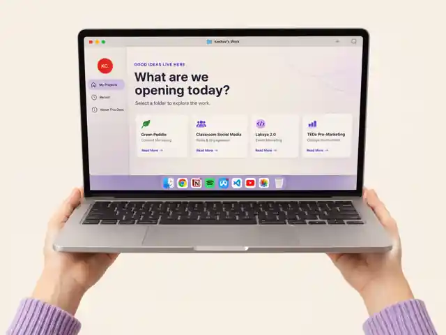

Tap a folder on the screen.
Choose a project on the laptop display to explore the role, contribution and details.
OPEN TABS, OPEN MIND
Welcome to my laptop. Pick a tab, poke around and see what I've been making happen.

Choose a project on the laptop display to explore the role, contribution and details.